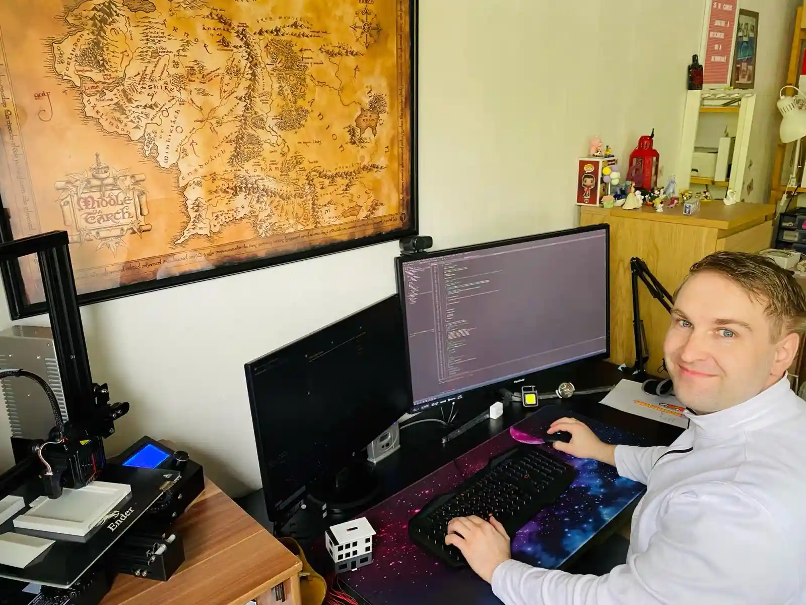

Daniel Dzierzon | WDD 130
My name is Daniel, I am 31 years young and I love connecting hardware and software. When I was a teenager I received a model train. I quickly realized that a lot of things there are really expensive. So I started to work with microcontrollers. At some point Arduinos came on the market and I could use them to to control the lights, signals and even trains. At some point I got motivated to start learning writing programs for windows and controlling them from there. Now I am about to learn moving the stuff to the web.